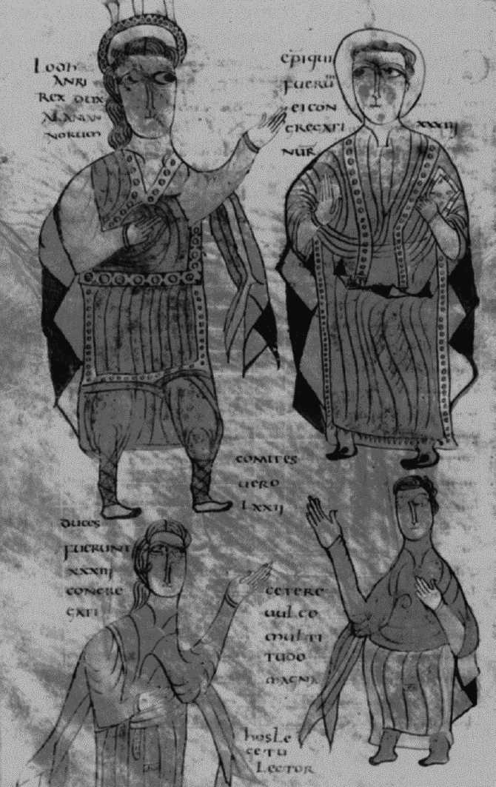
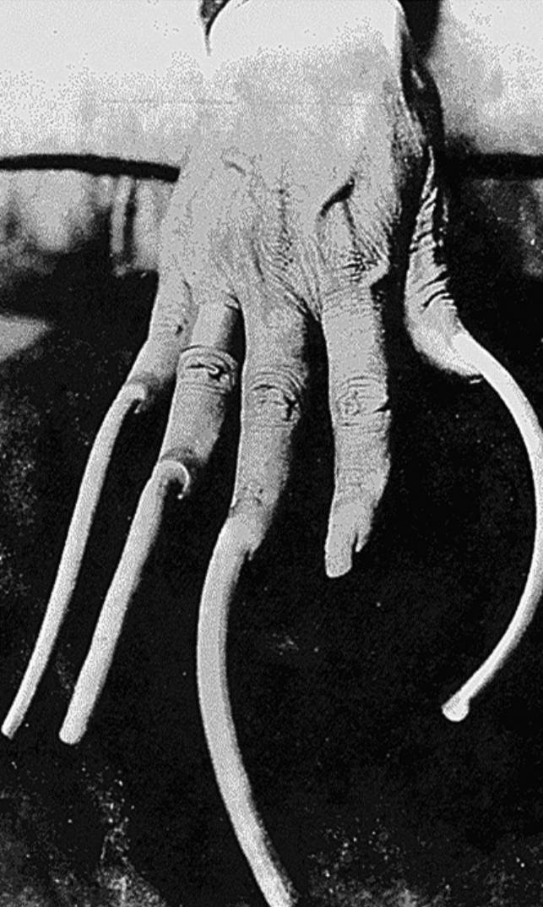

如上所述，诸古典文明衰落的基本原因在于它们的生产技术相对停滞不前，而这又使生产率低下。约翰·梅纳德·凯恩斯描述了这种技术发展的停滞状态：
史前至近代初期，技术上缺乏重要发明的情况是很引人注目的。近代史开始时，世界拥有的几乎每一项重大成就，都已为历史发端期的人们所知晓……史前一定有某个时期……与我们今天所生活的时代一样，技术进步，发明众多。但是，在人类进入有文字记载的历史以来较长一段时期内，这种盛况却不复存在。[1]
凯恩斯的看法是完全成立的。事实上，文明之前的新石器时代，技术已明显成熟。正是在这一时代，人们发明了带轮子的车、帆船和犁，发现了冶金化学工艺，计算出准确的阳历，学会了怎样使用畜力和利用风力。城市革命后，这一急速发展随即受阻。以后几千年中，只有三大发明具有重大意义，能与早期的发明相媲美，它们是：铁、字母和铸币。意味深长的是，这三者都不是发明于尼罗河流域、底格里斯河和幼发拉底河流域这些古老的文明中心，而是发明于束缚较少的边缘地区，即高加索山脉的边沿地区和爱琴海沿岸的商业城市。
除这三大发明外，这一时期的进步都以更早期的发现为基础，只不过是进一步提高原有技术，或扩大其应用范围而已。尽管这些不大的改进能产生极大的效益，但在许多情况下仍被人们所忽略。例如，上古时期用于套牛的挽具，当时被用来套马，这样，马在拉重物时容易窒息，结果至少浪费了马匹三分之二的力气。直到中世纪，一种合理、实用的挽具才被发明。在此之前，马匹仅用于运载较轻的货物，而沉重的货物则靠人拖运。在描绘建造金字塔和寺庙的古代雕刻品中，成千上万的人搬运石头的场景便可证明这一点。再如，公元前1世纪，在小亚细亚和中国出现了水磨。这一发明对长时间从事碾米劳动的妇女和奴隶来说，可能是一个大大节省劳力的装置。可是，直到4世纪，罗马才建造水磨，而且即便那时，水磨也较为罕见。
意味深长的是，唯有战争能将古典文明从其生产技术的昏睡状态中唤醒。希腊人发明了精巧的带有棘轮装置的石弩，靠滑车驱动的轮式攻城车，以及所谓“希腊火”（公元8世纪），即一种能有效地烧毁敌船和攻城器械的燃烧剂。但这些发明显然不能创造财富，也不能解决诸古老文明的基本经济问题。
既然新发明没有提高劳动生产率，那么，只有靠开垦荒地，或靠征服和剥削来增加财富。但是，未开垦的土地毕竟有限。富饶辽阔的地中海盆地，由于日益严重的大面积土壤侵蚀，已不再是主要的产粮地，这正成为一个严重的问题。同样，帝国也不可能无限扩大，因为有些严格的界限，凭借他们的军事技术水平是无法突破的。于是，当军事和官僚机构急速发展，给生产力造成过大压力时，必然会出现报酬递减的情况。如前所述，一种恶性循环由此开始。汉帝国和罗马帝国的衰落是两个佳例，对此我们掌握了较多的信息。捐税提高，贫困增加，激起了城乡的暴动，从而招致蛮族入侵。最终，不是内部起义成功，就是外来侵略得逞，或两者兼备。由此，形成了近代史前帝国历史的周期性。一位历史学家分析了罗马帝国衰落的原因，最后着重强调了它的技术落后。他说：
不应忘记，罗马帝国在技术上比中世纪欧洲更为落后。农业上，它通常采用一种耕种和休闲交替的休耕制，潜在的最肥沃的土地很少得到利用。这时，马轭还没有发明，只得用牛耕地拉车；水磨虽已出现，但似乎数量很少，一般用手推磨，靠牲畜和人力碾磨谷物。然而，技术如此落后的农业，却要支撑起一个比中世纪任何国家都要庞大得多的野心勃勃的上层建筑。没有一个中世纪王国像罗马帝国那样，既要供养一支专业常备军和拿薪水的官僚阶层，又要负担土地贵族和教会的开支。[2]
历史清楚地表明，只有发展技术，为帝国大厦提供必要的经济基础，才能打破这种恶性循环。但是，技术却停滞不前，其根本原因在于，各地统治集团只知道剥削现有的财富，不知道怎样去创造更多的新财富。从建造金字塔、通灵塔、大教堂和宫殿所消耗的大批人力、物力上可以看出，统治者从农民身上榨取了大量的剩余价值。但是，技术革命除了需要有效的组织和高压统治外，还需要某种更为重要的东西，而所有的农业文明都未能得到这一重要的东西，这就是它们停留在农业阶段的原因。

图64 西哥特人国王阿拉里克二世编纂的《罗马法汇编》早期手稿中的一页。这一页画的是一位蛮族国王、一位主教、一位伯爵和一位公爵。像这样一部法规汇编有助于保存罗马法中的各项原则。
奴隶制的普遍存在，是造成技术停滞不前的原因之一。使用奴隶从事劳动，一般比设计、制造新机器简单，成本也更低廉。因此，那时的发明家制造某些新装置，通常不是为了节省劳力，而是为了娱乐，或为了进行宗教仪式。公元1世纪，亚历山大时期的希罗用他掌握的有关蒸汽动力的知识，制造出一种能打开圣堂大门的装置。同样在这一世纪，罗马皇帝韦斯巴芗禁止使用一种廉价的可竖起石柱的机械，并说：“让我为普通百姓提供点食物吧！”尽管这种情感也许是值得称赞的，但实际上，这种观点却使古典时期帝国的城市变成了乡村的寄生虫，而不是产业中心。

图65 一名中国贵族的长指甲，他把指甲蓄得这样长只是为了证明他不是一个体力劳动者。
另外，奴隶制对劳动持否定态度，也阻止了技术的发展。劳动既然是奴隶的事情，自由民便以此为辱。即使在奴隶制不很盛行的文明地区，这种轻视劳动的观念依然存在。在中国，人们热衷于蓄长指甲就是例证。社会阶层等级分明，自然导致上层阶级轻视劳动，鄙视劳动者，而奴隶制只不过进一步加强了这种观念。正如亚里士多德在其《政治学》中所述的那样：“在治理得最好的城邦中……市民们既不从事手工业，也不经商，因为这种生活毫无高贵可言，对性格的完美是不利的。”公元65年，罗马哲学家塞内加在给卢齐利乌斯的一封信中，对体力劳动表示了同样的轻蔑，认为，体力劳动者应当“俯首垂目，毕恭毕敬”，他写道：
众所周知，有些东西仅仅出现在我们的记忆中。如玻璃窗的使用，它能让充足的阳光透过透明的玻璃照进房间；浴池下层结构及其嵌在墙上的管道，能发出热量，使池内上下水温相等……还有速记，它能记下最快的演讲，手舌并驾齐驱。但所有这些都是最卑贱的奴隶发明的。哲学则处于更高的地位，她并不训练人的手，而是精神的导师……是的，我说，她绝不是一个为庸常所需而制造工具的手艺人。[3]
正是这种哲学家与工匠的分离，阻止了欧亚大陆诸文明的技术发展。因此，也正是哲学家的有条理的思维与工匠的实践经验及传统知识这两者的相互影响，使西方在近代完成了伟大的科学和工业革命，从而为人类的发展做出了杰出贡献。但是，由于明显的社会分裂，以及由此产生的社会观念，这种相互影响在诸古典文明中是不可能发生的，因为高雅的知识分子没有兴趣，而下层工匠又缺乏动力。
这种技术上的停滞状态，说明了近代以前几千年中，欧亚大陆帝国历史周而复始的原因。各帝国兴亡的模式基本相同。没有一个帝国能加以突破，以达到一个新的发展水平。因而，由此形成的反复循环与充满活力的现代化工业社会迥然不同。W. W. 罗斯托在以下这段话中描写了在英国以工业革命开始划时代的、开拓性的“起飞”以前，诸农业文明所具有的这一共同特征：
……技术上的种种限制规定了农业文明无法突破的最高限度。这些文明并不缺乏发明、革新和某些较高的生产率，但它们对所处的自然环境的确缺乏系统的认识；这种认识能使发明成为多少有点规律的发展趋势，而不是对过去遗留的特别成就的继承……
由于生产率的这一最高限度，仅食物生产就占去了75%甚至以上的劳动力，而收入除维持最低生活水平的消费外，绝大部分用于非生产性或低生产性开支，如建造宗教纪念碑和其他纪念碑，从事战争，以及维持那些地租支配者的奢侈生活。至于穷苦百姓，或为了土地你争我夺，或把偶尔剩余的一点收入挥霍在铺张的婚礼或葬礼上。当时的社会价值观与人们易得到且能领悟的有限的见识相适应，社会结构则趋于等级化……[4]